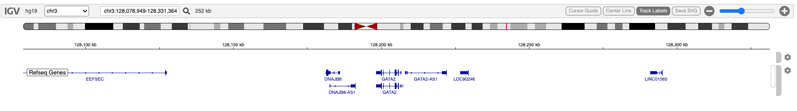
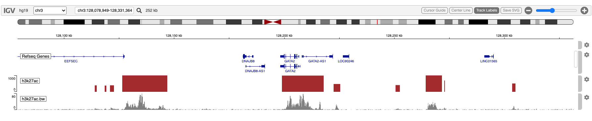

Obtain and Display H3K27ac K562 track from the AnnotationHub
Paul Shannon
2022-07-25
v06.annotationHub.RmdOverview
The Bioconductor AnnotationHub is a good source of genomic annotations of many different kinds.
H3K27ac is an epigenetic modification to the histone H3, an acetylation of the lysine residue at N-terminal position 27. H3K27ac is associated with active enhancers.
To the best of my knowledge, fetching data from the AnnotationHub does not support regions. The fetch is necessarily of the entire genomic resource - all chromosomes - and so may require time-consuming downloads. Subsetting by region takes place after the often time-consuming download.
Therefore, to run this vignette for the first time may take up to 20 minutes due to that download time.
Once downloaded, however, the resource is cached.
Display a genomic region of interest in igvR
library(igvR)
library(AnnotationHub)
igv <- igvR()
setBrowserWindowTitle(igv, "H3K27ac GATA2")
setGenome(igv, "hg19")
showGenomicRegion(igv, "GATA2")
for(i in 1:4) zoomOut(igv)
Query the AnnotationHub
aHub <- AnnotationHub()
query.terms <- c("H3K27Ac", "k562")
length(query(aHub, query.terms)) # found 7
h3k27ac.entries <- query(aHub, query.terms)These are the keys and titles of the available data
title
AH23388 | wgEncodeBroadHistoneK562H3k27acStdPk.broadPeak.gz
AH29788 | E123-H3K27ac.broadPeak.gz
AH30836 | E123-H3K27ac.narrowPeak.gz
AH31772 | E123-H3K27ac.gappedPeak.gz
AH32958 | E123-H3K27ac.fc.signal.bigwig
AH33990 | E123-H3K27ac.pval.signal.bigwig
AH39539 | E123-H3K27ac.imputed.pval.signal.bigwigSelect Two Resources: boadPeaks and fc bigwig
If not in your cache, this step may take 20 minutes.
x.broadPeak <- aHub[["AH23388"]]
x.bigWig <- aHub[["AH32958"]]The two resources are different data types, requiring different processing to render as tracks in igvR
- x.broadPeak is a GRanges object in memory
- x.bigWig is a bigwig file in your cache
broadPeaks: subset and display
The broadPeak data is a GRanges object already in memory. Subset to obtain only the 252 kb region in which we are interested.
roi <- getGenomicRegion(igv)
gr.broadpeak <- x.broadPeak[seqnames(x.broadpeak)==roi$chrom &
start(x.broadpeak) > roi$start &
end(x.broadpeak) < roi$end]igvR’s GrangesQuantitativeTrack must have only one numeric column in the GRanges metadata. That column is used as the magnitudes the track will display.
names(mcols(gr.broadpeak))
# "name" "score" "signalValue" "pValue" "qValue"
mcols(gr.broadpeak) <- gr.broadpeak$score
track <- GRangesQuantitativeTrack("h3k27ac bp", gr.broadpeak, autoscale=TRUE, color="brown")
displayTrack(igv, track)bigWig: subset and display
We use the import function from the rtracklayer package to read in only a small portion of the large bigWig file. Note that, as read, there is only one numeric metadata colum, “score”, so no reduction of mcols is needed.
file.bigWig <- resource(x.bigWig)[[1]]
gr.roi <- with(roi, GRanges(seqnames=chrom, IRanges(start, end)))
gr.bw <- import(file.bigWig, which=gr.roi, format="bigWig")
track <- GRangesQuantitativeTrack("h3k27ac.bw", gr.bw, autoscale=TRUE, color="gray")
displayTrack(igv, track)
Session Info
sessionInfo()
#> R version 4.2.0 (2022-04-22)
#> Platform: x86_64-apple-darwin17.0 (64-bit)
#> Running under: macOS Big Sur/Monterey 10.16
#>
#> Matrix products: default
#> BLAS: /Library/Frameworks/R.framework/Versions/4.2/Resources/lib/libRblas.0.dylib
#> LAPACK: /Library/Frameworks/R.framework/Versions/4.2/Resources/lib/libRlapack.dylib
#>
#> locale:
#> [1] en_US.UTF-8/en_US.UTF-8/en_US.UTF-8/C/en_US.UTF-8/en_US.UTF-8
#>
#> attached base packages:
#> [1] stats graphics grDevices utils datasets methods base
#>
#> other attached packages:
#> [1] BiocStyle_2.25.0
#>
#> loaded via a namespace (and not attached):
#> [1] knitr_1.39 magrittr_2.0.3 R6_2.5.1 ragg_1.2.2 rlang_1.0.4
#> [6] fastmap_1.1.0 highr_0.9 stringr_1.4.0 tools_4.2.0 xfun_0.31
#> [11] cli_3.3.0 jquerylib_0.1.4 systemfonts_1.0.4 htmltools_0.5.3 yaml_2.3.5
#> [16] digest_0.6.29 rprojroot_2.0.3 pkgdown_2.0.6 bookdown_0.27 textshaping_0.3.6
#> [21] BiocManager_1.30.18 purrr_0.3.4 sass_0.4.2 fs_1.5.2 memoise_2.0.1
#> [26] cachem_1.0.6 evaluate_0.15 rmarkdown_2.14 stringi_1.7.8 compiler_4.2.0
#> [31] bslib_0.4.0 desc_1.4.1 jsonlite_1.8.0